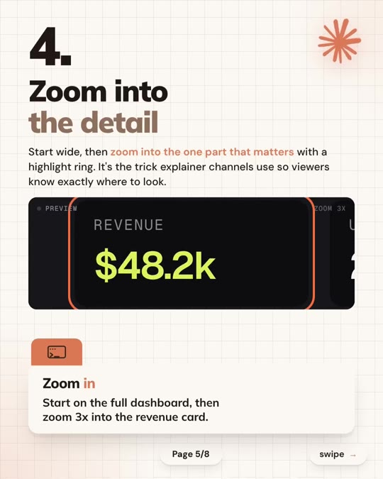
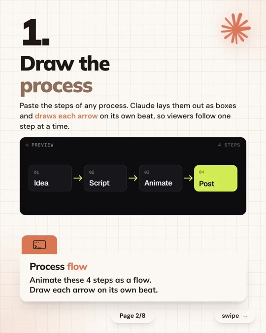
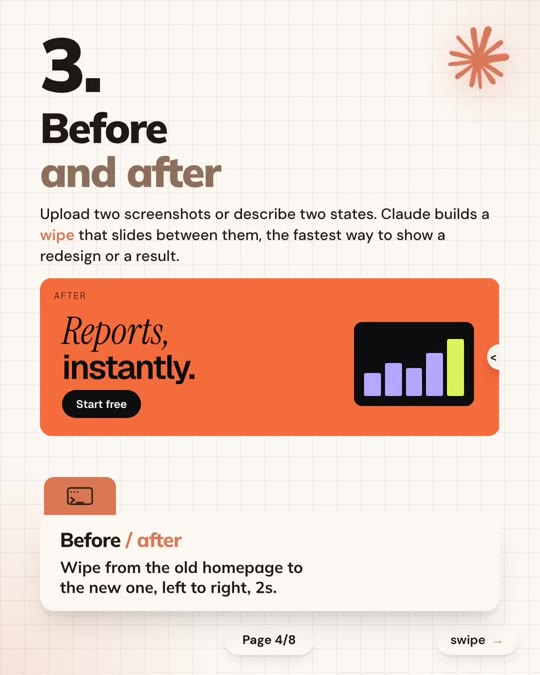
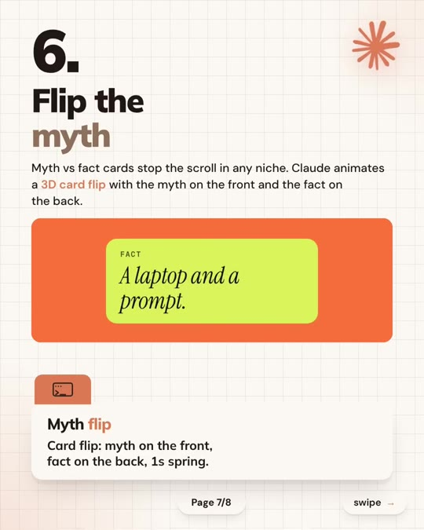

Video-Creation · AI-Explainers
6 Animated Explainer Video Patterns with Claude Opus
Library / Video-Creation / AI-Explainers
Commercial animation studios charge $1,000+ for 30-second explainer animations. Claude Opus can generate these exact motion graphic patterns as animated code artifacts (HTML/SVG/CSS/JS) directly from concise prompts. This guide documents the 6 core explainer patterns: step-by-step process flows, panning date timelines, before/after comparison wipes, dashboard zoom highlights, system hub diagrams, and 3D myth-vs-fact flip cards.

Steps
- Process Flow (Slide 2): When explaining workflows, request sequential arrow reveals so each step appears on its own beat.
Animate these 4 steps as a flow. Draw each arrow on its own beat.(slide 2) - Panning Timeline (Slide 3): For company history or multi-year roadmaps, prompt a camera pan across a horizontal milestone line.
Animate these 5 dates on a timeline. Pan along as each one lands.(slide 3) - Before / After Wipe (Slide 4): Contrast legacy states against improvements using a timed horizontal wipe transition.
Wipe from the old homepage to the new one, left to right, 2s.(slide 4) - Detail Zoom & Highlight Ring (Slide 5): Direct viewer attention across complex data visualizations by zooming 3x into the focal KPI.
Start on the full dashboard, then zoom 3x into the revenue card.(slide 5) - Hub & Spoke Architecture (Slide 6): Map integrations and connected systems by placing the core engine at the center and drawing connector lines outwards.
Put Claude in the center. Connect Slack, Notion, Drive and GitHub.(slide 6) - 3D Spring Card Flip (Slide 7): Hook viewers and dispel industry misconceptions with a 3D flip card alternating between myth and reality.
Card flip: myth on the front, fact on the back, 1s spring.(slide 7)



Verbatim
| When | Where | Text |
|---|---|---|
| Slide 1 | screen | STOP PAYING $1,000 per explainer video · 6 animations you can make with Opus 5.5 |
| Slide 2 | screen | 1. Draw the process Paste the steps of any process. Claude lays them out as boxes and draws each arrow on its own beat, so viewers follow one step at a time. Prompt: Animate these 4 steps as a flow. Draw each arrow on its own beat. Preview: Idea → Script → Animate → Post (4 STEPS) |
| Slide 3 | screen | 2. Build a timeline Give Claude a list of dates. It draws the line, drops each event on its year and pans along as they land, made for history and brand-story videos. Prompt: Animate these 5 dates on a timeline. Pan along as each one lands. Preview: LUMEN STORY · 2019 FIRST IDEA · 2020 FIRST USER · 2022 1M USERS · 2024 SERIES B · 2026 OPUS 5.5 |
| Slide 4 | screen | 3. Before and after Upload two screenshots or describe two states. Claude builds a wipe that slides between them, the fastest way to show a redesign or a result. Prompt: Wipe from the old homepage to the new one, left to right, 2s. Preview: BEFORE → AFTER: Reports, instantly. Start free |
| Slide 5 | screen | 4. Zoom into the detail Start wide, then zoom into the one part that matters with a highlight ring. It's the trick explainer channels use so viewers know exactly where to look. Prompt: Start on the full dashboard, then zoom 3x into the revenue card. Preview: REVENUE $48.2k · USERS 2,140 · CHURN 1.2% · ZOOM 3X |
| Slide 6 | screen | 5. Map how it connects For tools and systems, ask for a hub diagram. Each piece pops in around the center and a line draws to it, so the structure is clear in seconds. Prompt: Put Claude in the center. Connect Slack, Notion, Drive and GitHub. Preview: 4 CONNECTORS · Claude (center) connected to Slack, Notion, Drive, GitHub |
| Slide 7 | screen | 6. Flip the myth Myth vs fact cards stop the scroll in any niche. Claude animates a 3D card flip with the myth on the front and the fact on the back. Prompt: Card flip: myth on the front, fact on the back, 1s spring. Preview: MYTH: AI video needs a render farm. → FACT: A laptop and a prompt. |
| Slide 8 | screen | Save this for your next explainer. All 6 prompts in one place, ready when you need them. Save for later. Follow @claudetipsandtricks for one Claude tip every day |
| — | caption | Explainer studios charge $1,000 or more for a 30 second animated video. Opus 5.5 builds the same kinds of explainers from a prompt: process flows, timelines, before and after wipes, zooms, hub diagrams and myth flips. Slide 5 is the zoom trick explainer channels use to point at one number. Slide 7 is the myth flip, which works in almost any niche. |
Tools & links
- Claude Artifacts — Anthropic's interactive code and SVG preview sandbox for generating animated web components — claude.ai
- Creator profile — @claudetipsandtricks — instagram.com/claudetipsandtricks
Try this
- Copy the exact prompt from Slide 5 into Claude Artifacts with a mocked analytics dashboard to generate a clean camera-zoom motion graphic.
- Use the Slide 7 prompt (
Card flip: myth on the front, fact on the back, 1s spring.) with CSS 3D transforms (transform-style: preserve-3d) to test an interactive debunking card for social media embeds.
Open questions
The post mentions Opus 5.5 (a speculative/viral naming convention common on Instagram marketing accounts). The animation patterns and CSS/SVG prompts work reliably across current Claude Sonnet and Opus models.